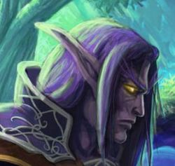

Récits Légendes de Kirin Tor Personnages Célébrités Guildes
Outils Calendrier Calendrier Illustré Mod d'interface
Informations Historiens FAQ Liens Crédits
Les légendes de Kirin Tor
==> Afficher les personnages de Elethir
Elethir Menefaë
Age : 276Sexe : Homme
Race : Elfe
Faction : Alliance
Formation : Voleur
Description : Les "mille esprits" : Telle est la signification de "Menefaë" en ancien elfique. Et pour cause, une tradition familiale veut qu'à la mort d'un membre de la famille d'Elethir, ses descendants héritent de la mémoire du défunt, utilisant pour ce faire des procédés magiques Quel'dorei remontant aux temps anciens et oubliés de tous.
L'Elfe n'a rien à craindre : la chose est ignorée de tous. Les seules personnes au courant sont enfermées dans son esprit, et lui parlent en toutes occasions, pour le guider... pour qu'il survive.
Il n'a d'autre mentor que lui-même. Il est un porteur de mémoire, et n'a eu d'autre choix que d'accepter le fardeau dont il a la charge. Mais lui aussi, comme ses ancêtres avant lui, croit en la destinée particulière des Menefaë.
Plus d'infos sur Elethir Menefaë >>>
Lire les 24 récits de Elethir Menefaë >>>
Itaelynn
 Age : 132
Age : 132
Sexe : Homme
Race : Elfe
Faction : Alliance
Formation : Druide
Description : " Sert la nature, car la compréhension se situe au delà des idéaux et la nature est vie. Sert la nature, car nulle force n’est aussi immuable que la sienne. "
Le suivant de Cenarius se ressourçait dans les vastes forêts de Teldrassil. Les yeux ouverts, juché sur une large branche, il ne réfléchissait pas. Sa pupille, immobile, ne suivait jamais le mouvement des quelques elfes qui passaient non loin, cherchant encore à affronter la corruption omniprésente en ces lieux de paix, loin de tous conflits.
Il avait depuis longtemps compris qu’affronter le mal à un autre endroit qu’à sa source était une pure perte de temps. Alors même que ces pensées lui effleuraient l’esprit, il se souvint des enseignements de son père : « Inutile d’arracher la patte d’une araignée, ça ne l’empêchera pas de marcher. Si tu veux être efficace, tranche directement la tête ».
La leçon avait fini par porter ses fruits.
Itaelynn redressa la tête, nonchalamment posée au creux de son bras, et bailla longuement. Puis, les griffes du druide jaillirent de leurs fourreaux et s’enfoncèrent dans la tendre écorce de l’arbre. En deux bonds, la panthère se retrouva au sol, le saut amorti par les mousses au pied de l’arbre. Itaelynn se lécha la patte de sa langue râpeuse et se la passa deux fois derrière l’oreille, de manière à lisser sa fourrure d’ébène. Et, d’une démarche féline, il se mit en route vers Darnassus.
Plus d'infos sur Itaelynn >>>
Lire les 5 récits de Itaelynn >>>
==> Voir la galerie d'images de Elethir